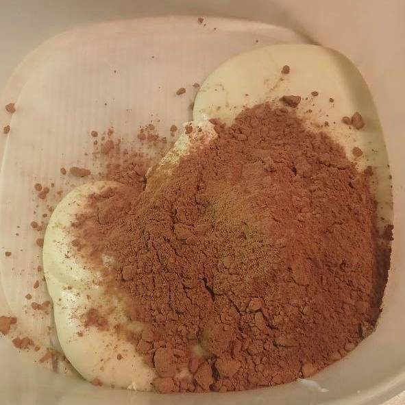

Десерт «Шоколадная колбаса»
Десерт «Шоколадная колбаса» — это сладкое лакомство, состоящее из измельчённого печенья, какао, орехов и сгущённого молока, оформленное в виде колбасы. Этот десерт возник в СССР в условиях дефицита, когда многие продукты были недоступны. Его готовили из простых ингредиентов: печенья, какао, сахара и масла. Название связано с формой, напоминающей колбасу.
Рецепт «Шоколадной колбасы»:
- Песочное печенье — 500 г
- Сгущённое молоко — 1 банка (380 г)
- Какао-порошок — 50 г
- Грецкие орехи — 100 г
- Сливочное масло — 50 г
- Сахарная пудра — для обсыпки (по желанию)
- Измельчите печенье и орехи.
- Смешайте с какао, сгущёнкой и маслом.
- В глубокой миске соедените печенье измельченное, орехи, какао-порошок и сгущеное молоко.
- Сформируйте "колбасу", заверните в пленку и охладите.
- Обваляйте в сахарной пудре перед подачей.
- Нарежьте и наслаждайтесь!


